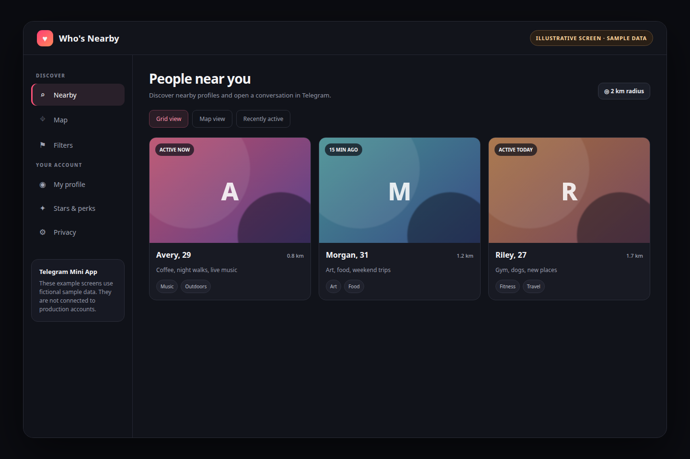
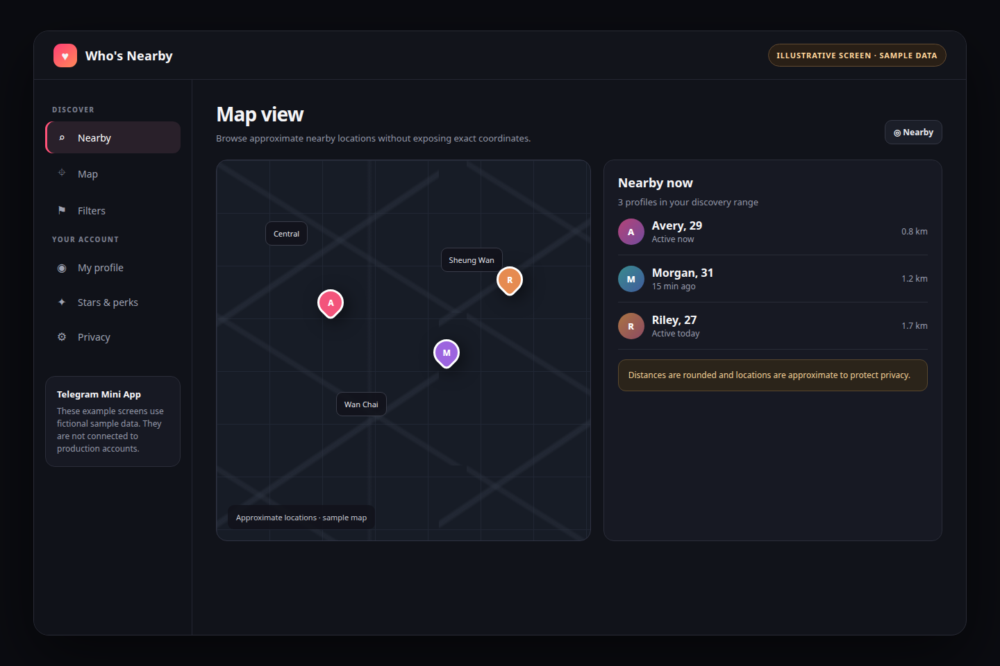
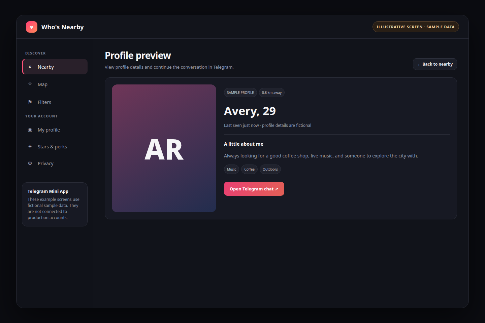
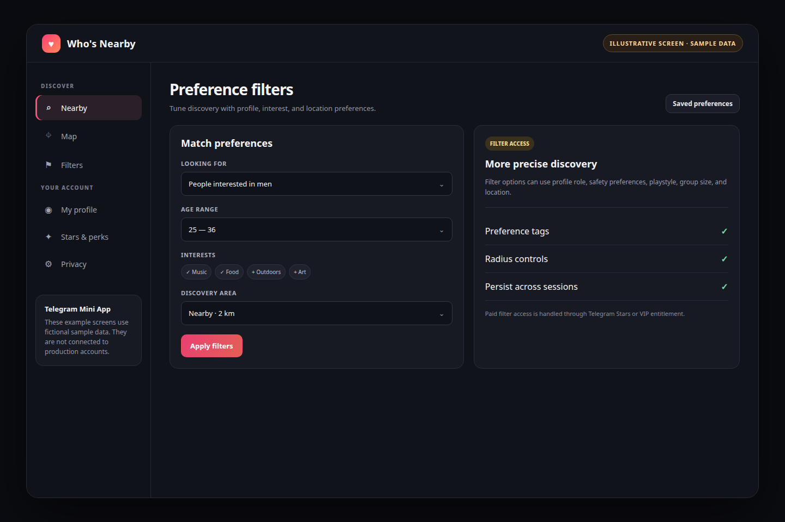
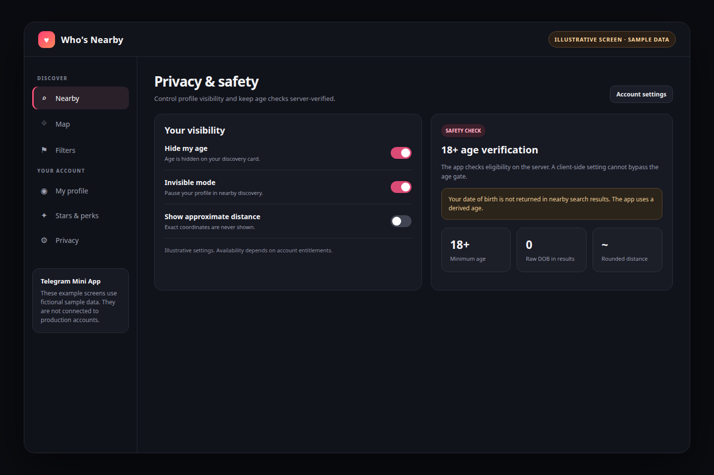
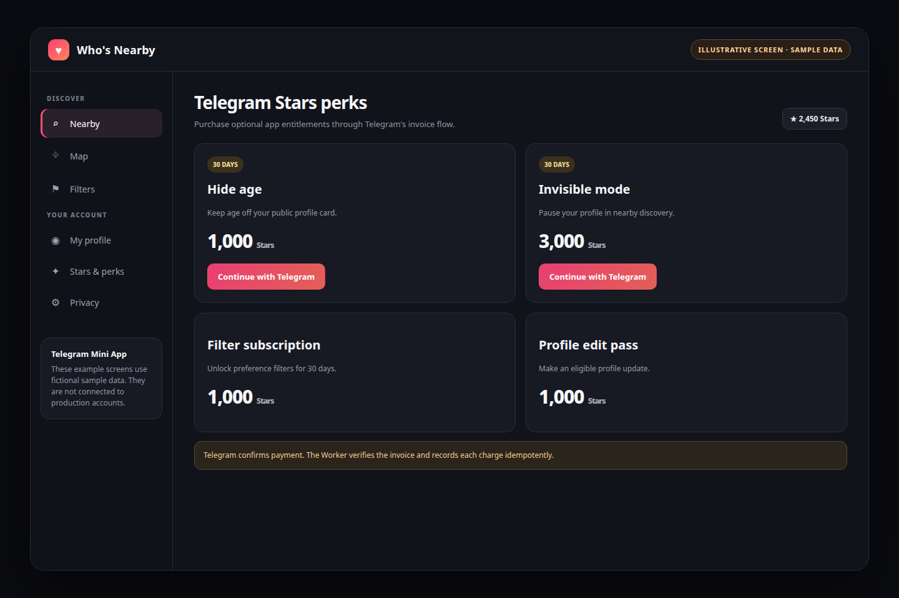
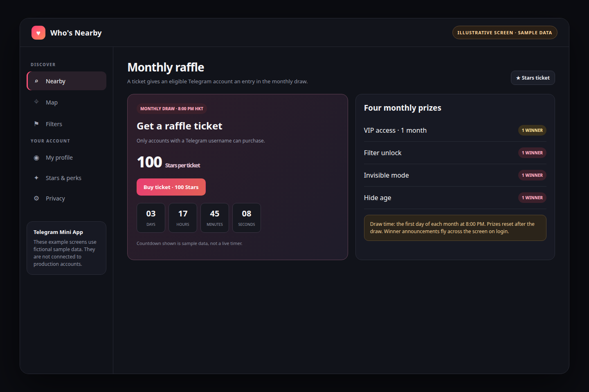
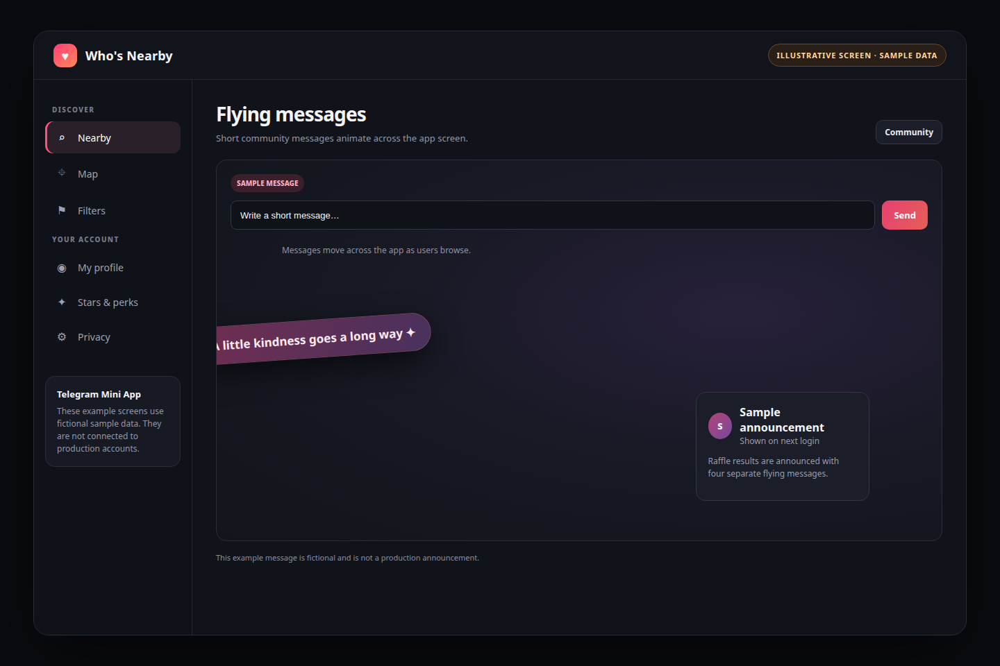
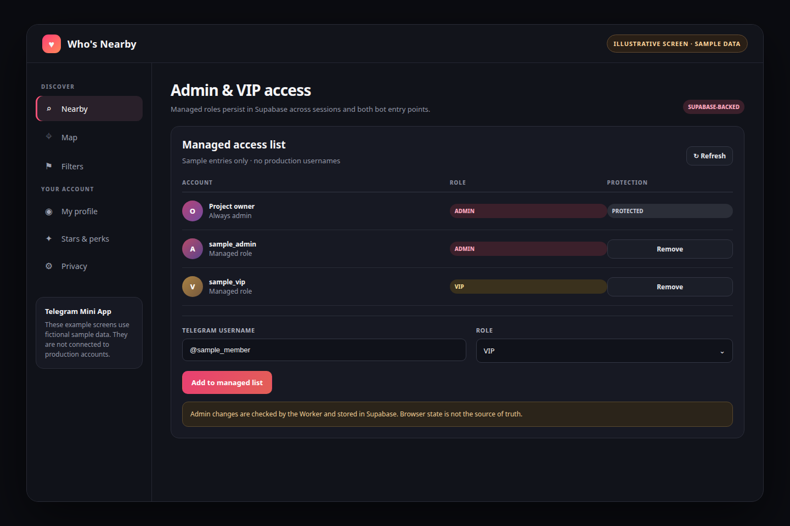

A visual guide to the app’s discovery, privacy, payments, raffle, community-message, and admin/VIP features. The admin/VIP list is now persisted in Supabase rather than relying on a hard-coded secondary-admin exception.
Browse nearby profiles in a card grid. Cards show derived age, rounded distance, activity, and profile interests; exact coordinates are not shown.

Fictional profile names and initials are used in this example.
Switch from cards to an approximate map view and browse nearby profiles without revealing exact locations.

Locations and map markers are made-up examples and are not production coordinates.
Review profile details and continue a conversation by opening the person’s Telegram chat.

The sample profile is fictional.
Refine discovery with preferences such as profile role, safety, playstyle, group size, and location. Paid filter access is unlocked through an eligible subscription or VIP status.

Filter labels are representative of the available preference controls.
Eligible accounts can hide age or use invisible mode. The 18+ gate is enforced on the server; nearby results use derived ages and rounded distances.

The controls shown are sample states and do not reflect an actual account.
Optional app entitlements are paid through Telegram Stars invoices. The Worker validates payment updates and records each charge idempotently.

Prices shown are sample reference values; check the live in-app menu for current pricing.
A ticket costs 100 Stars and requires a Telegram username. The draw runs at 8:00 PM Hong Kong time on the first day of each month. Four prizes are drawn: one month of VIP, filter unlock, invisible mode, and hide age. If fewer than four tickets are sold, one player receives VIP; if there are no tickets, the prizes do not carry over.

The countdown values are sample values, not a live timer.
Short community messages animate across the screen. Raffle winners are announced through four separate flying messages when users log in after the draw.

The sample message is fictional and is not a production announcement.
The admin menu loads managed roles from Supabase. Admin changes are verified by the Worker and persist across sessions. The owner remains protected; VIP unlocks paid features but does not grant admin access.

Names are fictional placeholders; no production role list is shown.